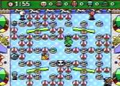

|


Review
Game Type: Overhead view action/strategy
You move your character around an area which is littered with
obstacles and enemies. To reach the exit you must clear a path through the
trees/rubble/whatever that is strewn around the area, and destroy every
enemy as well. Your only means of doing so is by laying bombs and scurrying
to get out of the blast range. Get caught in the blast or touched by an
enemy and you're a goner. There is also a 5-player (yes, simultaneous)
versus mode where the last one standing is the winner.
Gameplay: 90/100
If you haven't played either of the other 2 Super Bomberman games then
I'm wasting my breath trying to describe this to you. It is highly
recommended you get three friends together and rent either of them. For
those who have, this review will largely be a comparison to SB2.
Gameplay-wise the game is much the same as ever. There are of course new
options and items. Versus mode now supports 5 players instead of 4, and the
normal mode now supports 2 players at once. You can now find bunny wabbits
(or so I call them) to ride. The wabbits take the force of a blast if
you're hit while riding them, and there are 4 types, each with a different
ability like dashing or jumping. Unfortunately versus mode games tend to
take a little too long when everyone can take a hit unaffected thanks to
their wabbits, but they're a nice addition in the normal mode. You can now
choose from 10 characters to play as in versus mode (the bomber-babe *is*
playable).
Graphics: 30/100
This is the only disappointing part of what would otherwise be the best
Bomberman to date. The graphics look almost 8-bit now, especially on the
characters, a major downgrade from SB2. There are a few cool Mode 7 effects,
but that's mostly in the intro.
Sound: 95/100
Ah, the music! The graphics were a big let-down, but the music almost
makes up for it. It can readily be argued that FF3 and Secret of Mana have
better soundtracks, but SB3's is my favorite for the SNES, I think. A wild
mixture of reggae, pop, techno, and just about everything else. Sound
effects are cool, too, with loud explosions and shrieking exclamations from
the characters (decidedly Japanese). This is where the game really shines.
Overall: 85/100
If only it weren't for those graphics... As it is I cannot recommend
selling your kidneys to get it from your importer. If you're willing to
ignore its looks and are really sick of the same old stages and powerups in
the previous two games, then consider it, especially because of the
additional fifth player. But you may be better off looking into Mega
Bomberman for the Genesis.
|